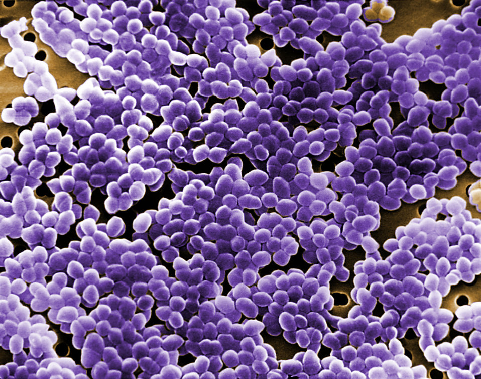
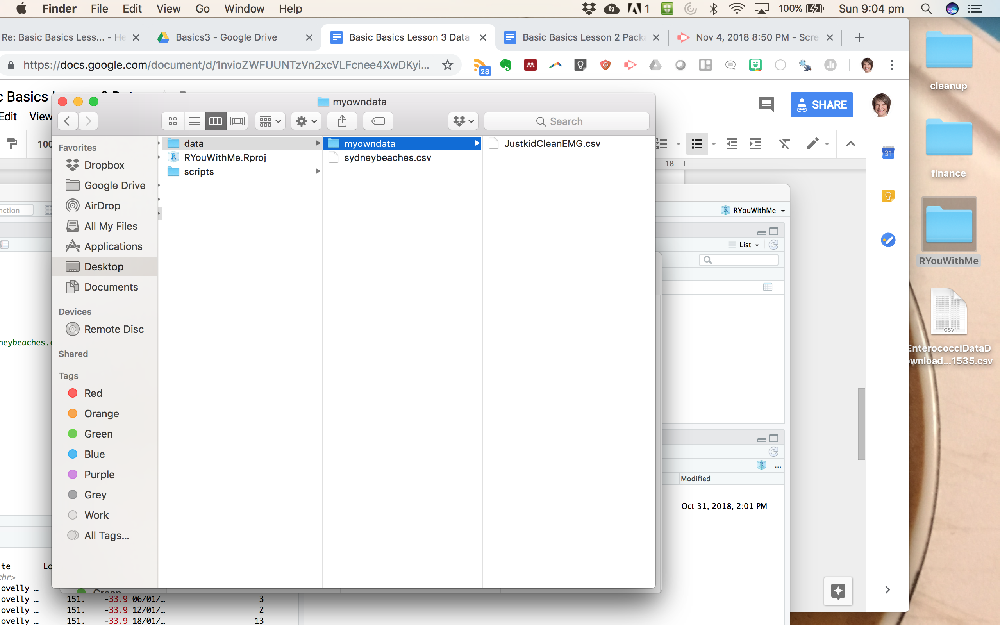

Getting data into RStudio
In this, the third lesson to Basic Basics, we’re going to review how to get data into RStudio, using a specially selected data file that we’ll continue to use for many of the RYouWithMe lessons.
Lesson Outcomes
By the end of the lesson, you should:
- Have the
sydneybeaches.csvdata file saved to your RYouWithMe data folder - Know how to use the
herepackage to tell R where your data is, how to useread_csvto read data from a .csv file, and how to use summary functions to explore your data - Have an idea of where to go to learn more about reading different kinds of data into R
Interlude… the Sydney beaches data
We’ll be using this dataset for many of the remaining RYouWithMe lessons. Not only is it locally relevant for R-Ladies Sydney, it’s also fascinating! This dataset is compiled by the NSW Office of Environment and Heritage contains the enterococci counts in water samples obtained from – you guessed it – Sydney beaches as part of the Beachwatch Water Quality Program! The dataset we’ll be working with is current as of October 13th 2018.
What’s enterococci, you ask? Whether you really want to know the answer depends on if you want to feel comfortable swimming in the Sydney region ever again…
From the Program (emphasis added):
Enterococci is found in the intestines of warm blooded animals and excreted in faeces and rarely present in unpolluted waters. The bacteria is found in very high numbers in raw sewage which makes it a good indicator of sewage pollution. Studies have shown a strong relationship between elevated levels of enterococci and illness rates in swimmers. It’s important to note that enterococci doesn’t cause illness, but its presence means there’s sewage in the water and, therefore, possibly pathogens, which do cause illness.
Indicator organisms are used to test for sewage pollution because: - they are easily detectable by simple laboratory tests - they are generally not present in unpolluted waters - results are available relatively quickly. The National health and Medical Research Council (2008) Guidelines for Managing Risks in Recreational Waters recommend enterococci as the single preferred indicator organism for the detection of faecal pollution.
Check out this picture of enterococci wearing R-Ladies purple!

Ok - back to the lesson…
Get some data!
Okay, if we’re going to discuss how to import data into R, then the first thing we’ll need to do is have a data set! For this lesson we’ll make it as painless as possible… click on this link, which will take you to the raw sydneybeaches data on github, then right click and save the data as a .csv file. Put the .csv file in your data folder inside your RYouWithMe folder.
RYouWithMe now has a data package! Check out this update video where Jen walks though how to read the sydneybeaches data from a saved .csv file, a github URL, and from the ryouwithme package directly.
Read and explore the Sydney beaches data
In this screencast, we’ll review:
- How to read in the beaches into R using
read_csvand theherepackage - How to get a feel for the data using
View,dim,str,head,tail, andsummary - How to get simple summary stats using the
skimrpackage
Your turn
Watch the video and then carry out the following steps:
- Load the
tidyverseandherepackages at the top of your script [you should have these there from Lesson 2!] - Read the beaches data into R
- practice reading from a csv, a github URL AND installing the RYouWithMe package (see NEW video here)
- Play around with the summary functions
Then have a go with your own data!
Try putting a datafile that you might need to work with in R in a subfolder of your data folder and use the here package to read the data into R.
What kind of assumptions does R make about the kind of data in each of your columns?
Example. Here I have made a subfolder called myowndata within my data folder and put a .csv file in it.

To read it in using the here package, just tell R that the data lives in a subfolder.
kidEMG <- read_csv(here("data", "myowndata", "JustkidCleanEMG.csv")Beyond local CSV files
But what if my data isn’t in .csv format??
No problem, there is a package for that! R can read in data from almost anywhere and any format. For example, you can learn more about reading data from…
- Excel files:
install.packages("readxl")vignette - SPSS/Stata/SAS files:
install.packages("haven")vignette - Google sheets:
install.packages("googlesheets4")vignette - Copy and paste using datapasta:
install.packages("datapasta")vignette
… but R has tools for working with a very wide range of possible data formats and so there are packages out there for all sorts of things.
That’s it for Basic Basics.
Are you ready to get your data cleaned up a bit? Check out CleanItUp next.